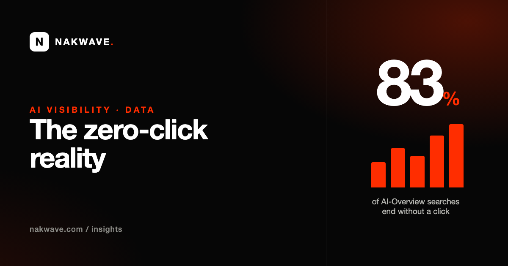

AI Overviews & Zero-Click Search: What the 2026 Data Means for Your Traffic

What "zero-click" actually means
A zero-click search is one where the user gets their answer on the results page — from an AI Overview, a featured snippet, or a knowledge panel — and never visits a website. For a decade this was a slow trend. Generative AI turned it into a cliff.
When Google shows an AI Overview, the average zero-click rate jumps to about 83%, compared with roughly 60% on queries without one. Across all searches, US and EU zero-click rates now sit around 58.5% and 59.7%. AI Overviews appear on roughly 13% of US desktop queries and, by some trackers, trigger on close to half of all monitored queries. Translation: for a growing share of searches, the answer is the destination.
The counterintuitive part: rank ≠ citation
Here's the finding that reframes everything. Analyses of AI-Overview citations in 2026 found that roughly 5 out of 6 citations come from content that isn't in the classic top 10 at all. AI engines don't just re-rank Google's list — they re-select passages based on how cleanly a page answers the specific question.
That cuts both ways. If you've been stuck on page two for years, AI search is the first channel where you can leapfrog bigger competitors without out-spending them on links. And if you're comfortably ranking #3, that position no longer guarantees you're the source the AI quotes.
Why bother, if nobody clicks?
Two reasons. First, being named in an AI answer is a recommendation, not a link — it carries the trust of advice. Second, the clicks that remain are more valuable: being cited inside an AI Overview is associated with about 35% more organic clicks and far higher paid-click intent than being absent. The traffic is smaller and hotter. You're no longer competing for a scroll; you're competing to be the recommendation.
What to do about it
1. Write for extraction, not just ranking
Lead every key page with a direct, self-contained answer in the first two sentences. AI engines lift passages that stand alone — a paragraph that needs the three above it to make sense can't be quoted.
2. Ship structured data
Organization, LocalBusiness, Product, FAQPage and Article schema tell engines exactly what your content is. It's the single most reliable lever for machine extraction, and most small-business sites still have none.
3. Answer real questions, specifically
Turn the questions customers actually ask into headings, and answer each in ~40–60 words with a real number or claim. "We install in 3–5 working days" gets cited; "fast, reliable service" gets ignored.
4. Measure where you stand
Ask ChatGPT, Gemini, Perplexity and Google's AI the questions your customers ask, and record whether you show up. That baseline — not your Google rank — is the number that now matters.
Are you the answer, or invisible?
Our free AI Visibility Audit tests you across four AI engines with real customer questions and shows exactly where you're being cited — and where a competitor is instead.
Run my free audit →